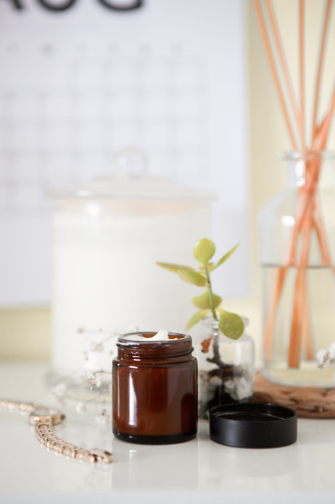

The Beauty Secret
Dicas de Maquiagem e BelezaSaúde e beleza
Bem-vindo ao The Beauty Secret! Oferecemos um serviço de parceria com profissionais de beleza para eventos especiais, como casamentos e formaturas. Nossos pacotes de oferta incluem maquiagem, cabelo e unhas, garantindo uma experiência incrível. Trabalhamos com profissionais qualificados e nossa plataforma permite encontrar os melhores na região. Conte conosco para um serviço premium e pacotes personalizados, tornando seu evento ainda mais especial. Além disso, no The Beauty Secret, você encontra dicas incríveis de saúde, beleza, maquiagem e muito mais!
-
-
-

-
Maquiagem
A maquiagem é uma forma popular de expressão pessoal que tem sido usada há séculos para realçar a aparência facial e destacar características individuais. É uma forma de arte que permite às pessoas criar looks únicos e expressar sua personalidade, estilo e criatividade. A maquiagem pode ser aplicada em diferentes partes do rosto, como olhos, lábios, bochechas e sobrancelhas, usando uma variedade de produtos cosméticos, como sombras, delineadores, batons, blushes, bases e muito mais. A aplicação da maquiagem pode variar de sutis a dramáticas, dependendo da preferência pessoal e da ocasião. Além de realçar a beleza, a maquiagem também pode ser usada para corrigir imperfeições, como olheiras, manchas de pele e acne, bem como para criar efeitos de contorno e iluminação para alterar a forma do rosto. Ela pode ser usada para criar looks naturais, para o dia a dia, ou looks mais glamorosos e sofisticados, para ocasiões especiais. A indústria de maquiagem é vasta, com inúmeras marcas, produtos e tendências em constante evolução. Os entusiastas de maquiagem têm acesso a uma ampla gama de produtos, desde maquiagem de alta qualidade de marcas renomadas até opções mais acessíveis. O mercado de maquiagem também é conhecido por sua diversidade, com uma crescente variedade de tons de pele, cores e texturas de produtos para atender a diversas necessidades e preferências. No entanto, é importante lembrar que a maquiagem é uma forma de expressão pessoal e não uma obrigação. O uso de maquiagem é uma escolha individual e não deve ser usado para definir a beleza ou o valor de uma pessoa. A maquiagem também deve ser aplicada com cuidado e consideração pela saúde da pele, utilizando produtos adequados para o tipo de pele e removendo-a corretamente ao final do dia. Em resumo, a maquiagem é uma forma de expressão pessoal que permite às pessoas criar looks únicos e realçar sua aparência facial. Ela pode ser usada para corrigir imperfeições, criar efeitos de contorno e iluminação, e é uma indústria em constante evolução com uma ampla variedade de produtos disponíveis. No entanto, é importante lembrar que a maquiagem é uma escolha pessoal e não deve ser usada para definir a beleza de uma pessoa.
Cabelo
Cuidar dos cabelos é uma parte importante dos cuidados pessoais e muitas pessoas estão sempre em busca de dicas e truques para manter seus cabelos saudáveis, brilhantes e bonitos. Seja você um amante de cabelos ou esteja apenas começando a aprender sobre cuidados capilares, aqui estão algumas dicas e truques que podem te ajudar a ter um cabelo deslumbrante. Hidrate os cabelos regularmente: A hidratação é essencial para manter os cabelos saudáveis e brilhantes. Use um condicionador de qualidade após o shampoo para hidratar os fios e deixá-los macios e sedosos. Além disso, faça uma hidratação profunda pelo menos uma vez por semana, usando uma máscara capilar ou óleo capilar, para nutrir profundamente os cabelos e evitar o ressecamento. Proteja os cabelos do calor: O uso frequente de ferramentas de calor como secadores, chapinhas e modeladores pode causar danos aos cabelos. Portanto, é importante proteger os cabelos do calor. Use um protetor térmico antes de usar qualquer ferramenta de calor para criar uma barreira entre os fios e o calor, evitando danos e quebra. Evite lavar os cabelos com água quente: A água quente pode ser prejudicial aos cabelos, pois pode retirar a umidade natural dos fios, deixando-os secos e frágeis. Tente lavar os cabelos com água morna ou fria para manter a hidratação natural dos fios e evitar o ressecamento. Use produtos adequados para o seu tipo de cabelo: Cada tipo de cabelo tem suas necessidades específicas, portanto, é importante usar produtos de cabelo adequados para o seu tipo de cabelo. Se você tem cabelos secos, procure produtos hidratantes e nutritivos. Se você tem cabelos oleosos, opte por produtos leves e não comedogênicos. Escolha shampoo, condicionador, máscara capilar e outros produtos que sejam formulados para atender às necessidades do seu tipo de cabelo. Faça uso de tratamentos capilares: Existem diversos tratamentos capilares disponíveis no mercado que podem ajudar a melhorar a saúde e aparência dos cabelos. Desde tratamentos de reconstrução capilar para cabelos danificados, até tratamentos de hidratação profunda para cabelos ressecados, escolha os tratamentos capilares adequados para o seu tipo de cabelo e faça uso regularmente para obter resultados visíveis. Tenha cuidado ao pentear os cabelos: Pentear os cabelos de forma agressiva pode causar quebra e danos aos fios. Use um pente de dentes largos ou uma escova com cerdas macias para desembaraçar os cabelos com cuidado, começando pelas pontas e subindo em direção à raiz. Evite pentear os cabelos quando estiverem molhados, pois os fios estão mais frágeis nesse estado. Faça cortes de cabelo regularmente: Cortar as pontas dos cabelos regularmente pode ajudar a evitar pontas duplas
Autocuidado
O autocuidado é uma prática importante que envolve cuidar de si mesmo em todos os aspectos: físico, emocional e mental. É uma forma de se dedicar a si mesmo e priorizar o bem-estar e a saúde em sua vida cotidiana. O autocuidado é fundamental para equilibrar as demandas do dia a dia e promover uma vida saudável e feliz. Uma das principais áreas do autocuidado é o cuidado físico. Isso envolve manter uma alimentação equilibrada, praticar exercícios regularmente e dormir o suficiente. Comer alimentos saudáveis, beber água suficiente e evitar o consumo excessivo de alimentos processados e açúcar podem contribuir para uma saúde melhor. A prática regular de exercícios, seja caminhar, correr, nadar, ou praticar ioga, pode ajudar a melhorar a resistência física, reduzir o estresse e aumentar a energia. Além disso, dormir o suficiente é crucial para o bom funcionamento do corpo e mente, portanto, é importante estabelecer uma rotina de sono adequada. Além do cuidado físico, o autocuidado também abrange o cuidado emocional e mental. Isso pode incluir a prática de técnicas de relaxamento, como meditação ou respiração profunda, para reduzir o estresse e a ansiedade. É importante também expressar emoções de maneira saudável, seja conversando com amigos ou familiares, escrevendo em um diário ou procurando um profissional de saúde mental, quando necessário. Priorizar o tempo para si mesmo, para descansar e relaxar, é igualmente importante. Outra parte essencial do autocuidado é estabelecer limites saudáveis. Isso significa aprender a dizer "não" quando necessário e não sobrecarregar-se com obrigações e responsabilidades excessivas. É importante também estabelecer tempo para hobbies, interesses pessoais e atividades que tragam alegria e satisfação. Fazer coisas que você ama e que o fazem feliz pode aumentar sua autoestima e bem-estar. Por fim, é importante lembrar que o autocuidado é individual e pode variar de pessoa para pessoa. O importante é identificar quais práticas de autocuidado funcionam melhor para você e incorporá-las em sua rotina diária. Lembre-se de que cuidar de si mesmo não é egoísmo, mas sim uma forma essencial de manter-se saudável e equilibrado para enfrentar os desafios da vida. Portanto, reserve um tempo para cuidar de si mesmo e priorizar o seu bem-estar!
Unhas
As unhas são uma parte importante da aparência e do autocuidado de muitas pessoas. Além de proteger as pontas dos dedos, as unhas também podem ser uma forma de expressão pessoal. Uma das maneiras mais populares de cuidar das unhas é usar esmaltes, que oferecem uma ampla variedade de cores, estilos e opções de design. A primeira etapa para cuidar das unhas é garantir que elas estejam limpas e bem cortadas. Manter as unhas limpas ajuda a prevenir o acúmulo de sujeira e bactérias sob as unhas, o que pode causar infecções. É importante também cortar as unhas regularmente, mantendo-as em um comprimento que seja confortável e seguro para o dia a dia. Os esmaltes são uma maneira divertida de adicionar cor e estilo às unhas. Existem muitas opções de cores e acabamentos disponíveis, desde os tradicionais tons de vermelho e rosa até os mais ousados, como azul, verde, amarelo e até mesmo tons metálicos ou com glitter. Os esmaltes também podem ser usados para criar designs, como francesinhas, unhas ombré ou nail arts mais elaboradas. Para aplicar o esmalte de forma adequada, é importante preparar as unhas corretamente. Isso envolve empurrar as cutículas suavemente e remover qualquer esmalte antigo ou resíduos. Em seguida, uma base de unhas pode ser aplicada para proteger as unhas e fazer com que o esmalte dure mais tempo. Depois, é hora de aplicar o esmalte escolhido em camadas finas e uniformes, aguardando secar entre as camadas. Por fim, um top coat pode ser aplicado para dar brilho e ajudar a fixar o esmalte. Além de escolher cores e designs de esmaltes, é importante também cuidar da saúde das unhas. Isso inclui manter as unhas hidratadas, usando cremes ou óleos específicos para cutículas e unhas, e evitar roer as unhas, o que pode causar danos e infecções. É importante também não usar as unhas como ferramentas para abrir objetos ou realizar tarefas que possam danificá-las. Outra dica importante é dar um tempo para as unhas "respirarem", ou seja, ficar sem esmaltes por alguns dias, para permitir que as unhas se recuperem e fiquem saudáveis. Além disso, é importante também escolher esmaltes de qualidade, que sejam livres de substâncias prejudiciais, como formaldeído, tolueno e dibutilftalato (DBP), para garantir que as unhas fiquem saudáveis e protegidas. Em resumo, unhas e esmaltes são uma forma popular de cuidado pessoal e expressão de estilo. Cuidar das unhas adequadamente, mantendo-as limpas, hidratadas e protegidas, e usando esmaltes de qualidade, pode ajudar a mantê-las bonitas e saudáveis. Lembrando sempre de dar um tempo para as unhas respirarem e evitar roer as unhas ou usá-las de maneira inadequada.
Parceiros
Oferecemos um serviço de parceria com profissionais de beleza para eventos especiais, como casamentos e formaturas. Nossos pacotes de oferta incluem maquiagem, cabelo e unhas, garantindo uma experiência incrível. Trabalhamos com profissionais qualificados e nossa plataforma permite encontrar os melhores na região. Conte conosco para um serviço premium e pacotes personalizados, tornando seu evento ainda mais especial, simule já o seu evento conosco no formulário abaixo: